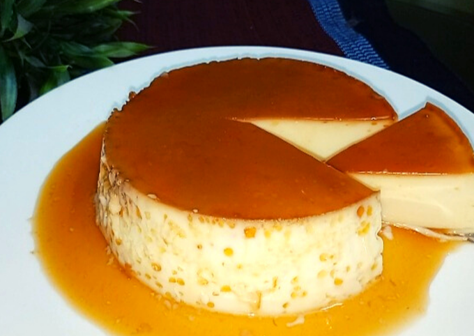

Egg pudding is made from 3 animal-based ingredients and ready in 5 minutes! This carnivore diet dessert is super delicious when you want a zero-fiber sweet treat.
Requirements!
Prep Time: 5 minutes
Chill Time: 2 hours
Total Time: 2hours 5minutes
Total Servings: 2
Ingriedients
- 5 soft-boiled eggs peeled
- 4 ounces half and half
- 1 tablespoon grass-fed butter, softened
- 2½ tablespoons sweetener see note
- 1 teaspoon vanilla extract
- 1 pinch salt
Instructions!
- Add all ingredients to the bowl of a blender and blend until smooth. Taste and adjust sweetener, as needed.
- Best if chilled in the fridge for 2 hours before serving..